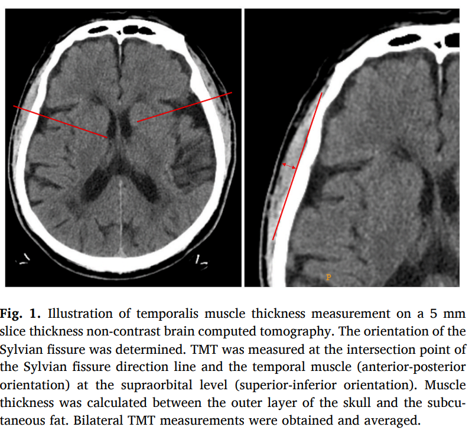
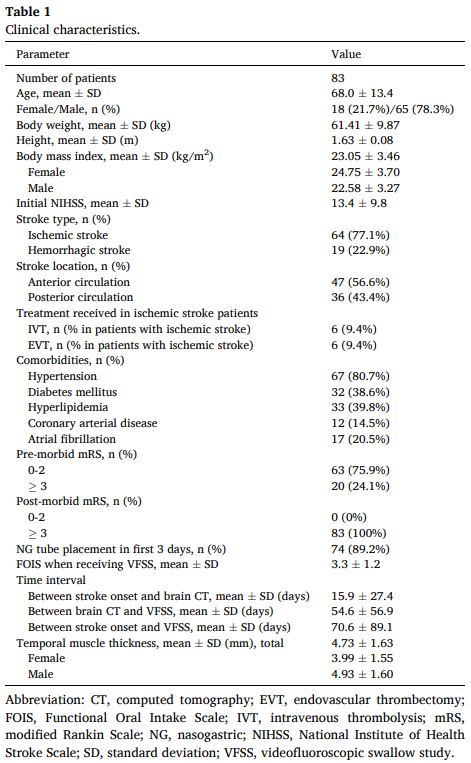
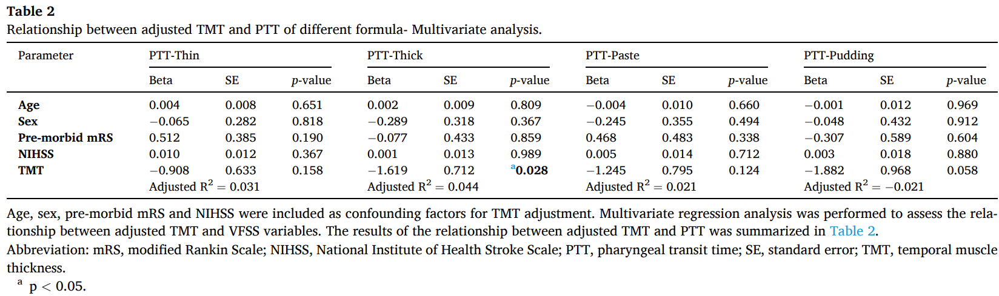
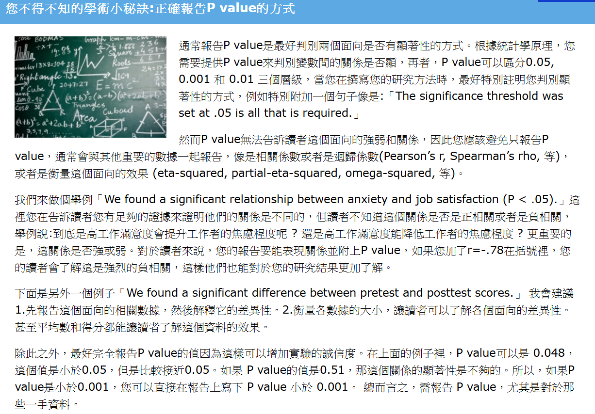
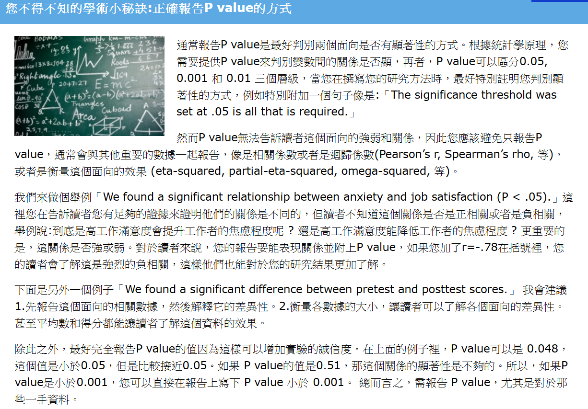
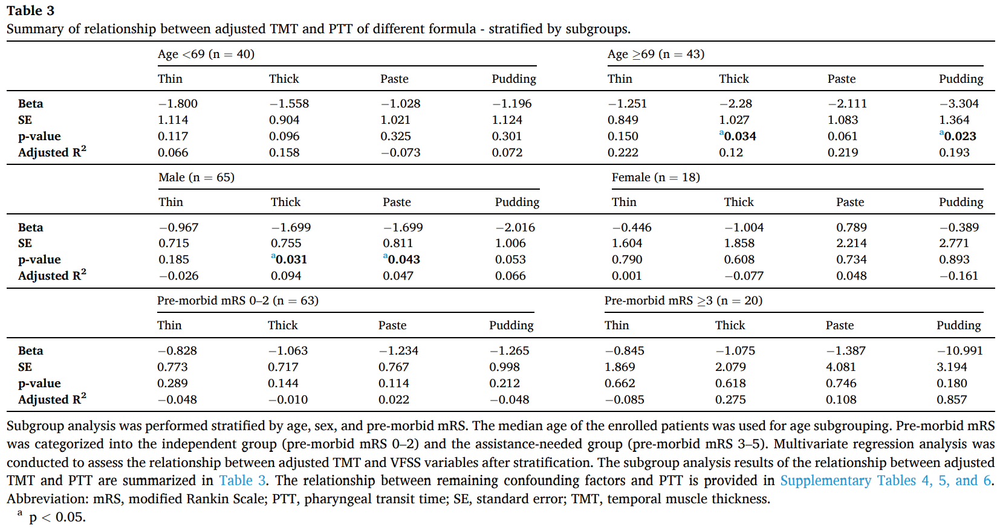

嚥下運動解析に基づく側頭筋厚と脳卒中後嚥下障害の関連性
キーワード:嚥下障害、脳卒中、側頭筋、ビデオ嚥下造影検査
台湾医学会誌 Available online 14 August 2024
Index
Purpose
目的：
私たちは、TMT（舌筋膜厚）が嚥下の特定の段階に影響を与えることで、PSD（嚥下後吸引）と相関していると仮定しました。この関係を理解することで、嚥下訓練プログラムの調整や食品のテクスチャの変更に役立つ可能性があります。
本研究では、TMTとPSDの関連性を調査するために、ビデオ嚥下造影検査（VFSS）を用いました。
#Patients
対象者：
2015年5月から2020年3月までの間に、三次医療機関で嚥下障害を有する83名の患者を対象とした。
1. 選定基準:
(1) 年齢が20歳以上で、虚血性または出血性脳卒中の既往があること
(2) 臨床評価またはビデオ嚥下造影検査（VFSS）による嚥下障害の診断を受けていること
(3) 非造影の脳コンピュータ断層撮影（CT）画像が利用可能であること
2. 除外基準:
(1) 脳腫瘍、パーキンソン病、脳手術を含む、脳卒中以外の神経学的基礎疾患の既往歴がある場合
(2) 開頭術や頭蓋骨切除術を含む脳手術の既往歴がある場合
(3) 頭頸部手術の既往歴がある場合
(4) VFSS検査の6か月以内に脳CTを受けていない場合
(5) VFSSを受けていない、またはVFSS中に少なくとも2種類のボーラステクスチャテストを受けていない場合
(6) 終末期の臨床状態である場合
Method
方法：
1. TMTの測定：
TMTは、VFSSの6か月以内に撮影された非造影脳CT画像を用いて評価しました。複数の脳CTスキャンが利用可能な場合は、VFSS日付に最も近いものを測定対象としました。
2. VFSS検査：
バリウム製剤：薄層、濃層、ペースト（Baritop LVおよびNeo-High Toromeal III）、プリン状製剤を使用。
測定項目：口腔通過時間（OTT）、咽頭通過時間（PTT）、嚥下トリガー時間（STT）。
PAS（Penetration-Aspiration Scale）：嚥下中に発生する侵入および吸引イベントの深さと反応を評価する8段階の順序尺度。
MBSImP（Modified Barium Swallow Impairment Profile）：修正バリウム嚥下検査の結果を解釈および報告するための標準化されたスコアリングシステム。
3. サブグループの分類：
年齢の閾値：対象者の中央値年齢を基準に分類。
既往の mRS（修正Rankin Scale）：バイナリのカテゴリ変数として扱い、「自立可能なグループ」（既往mRS 0–2）と「支援が必要なグループ」（既往mRS 3–5）に分類。
4. 統計解析：
TMTと連続変数の関係：線形回帰分析を実施。
TMTとカテゴリ変数の関連性：ロジスティック回帰分析を実施。
VFSS変数（PTT、OTT、STT）：偏りを補正するため対数変換を適用。
データはさらに、年齢、性別、既往状態に基づいてサブグループ化して分析。
統計解析はSASソフトウェア（バージョン9.4、SAS Institute Inc., Cary, North Carolina, USA）を用いて実施し、有意水準はp < 0.05と設定しました。
Results
結果：
1.TMTと性別および既往mRSの関連：
TMTは交絡因子として性別および既往mRSと有意に相関していました。単変量回帰分析では、TMTが小さい場合（p = 0.010）および既往mRSが悪い場合（p = 0.018）、濃層製剤でのPTT延長と関連していました。また、TMTが小さい場合、ペースト製剤でのPTT延長と関連していることも示されました（p = 0.037）。
交絡因子を調整した多変量解析では、TMTが濃層製剤でのPTTの独立した指標であることが示されました（p = 0.028）。


2.参加者とその特徴：
合計83名の患者が全ての登録基準を満たし、最終研究に含まれました。
参加者の臨床的特徴は表1に示されています（登録患者のうち68名（78.3%）が男性）。
TMT測定の評価者間信頼性はICC 0.95を示し、優れた信頼性が確認されました。

 

3.TMTと参加者の特徴との関係：
解析の結果、男性（p = 0.029）および低い修正Rankinスケール（p = 0.040）が、交絡因子としてTMTの増加と関連していることが示されました（補足表2）。

4.参加者の特徴とVFSS変数との関係：
単変量回帰分析を用いて、参加者の特徴とVFSS変数（嚥下の各段階における測定時間、PAS、MBSImP）の関連を解析しました（補足表3）。
調整済みTMTとVFSS変数の関係：
交絡因子を調整したTMTと、異なるボーラステクスチャにおける咽頭段階の変数の関係を検討する多変量解析の結果を表2に示します。
すべてのボーラステクスチャにおいて、TMTとOTT、STT、PASの間に統計的に有意な関連は観察されませんでした。
5.年齢、性別、既往mRSによるサブグループ解析：
表3に示すように、既往の機能的状態に基づいて分類されたサブグループにおいても、TMTとVFSS変数の間に有意な相関は認められませんでした。
Conclusion
結論：
本研究は、TMTとVFSS変数との関連についての洞察を提供し、特に咽頭段階において、TMTが嚥下障害の潜在的な予測因子として機能する可能性を示唆しています。その結果、TMTは個別化されたリハビリテーション戦略を開発する上で有用な参考指標となり得ます。
1.TMTは、PSD（嚥下後吸引）と診断された患者における嚥下運動学的変化と関連していました。
2.TMTは、嚥下プロセスにおける濃層製剤の咽頭段階の遅延に対する独立した指標として機能しました。
3.TMTは、PTT（咽頭通過時間）の独立した予測因子として認識されましたが、OTT（口腔通過時間）との関連はありませんでした。
4.単変量解析では、TMTが小さいほど、濃層およびペースト製剤でPTTが延長することが示されました。
5.ボーラスの粘度は、嚥下の生体力学に影響を与える要因として確立されています。
6.性別およびmRS（修正Rankinスケール）は、脳卒中患者におけるTMTの交絡因子でした。
7.すべてのボーラステクスチャにおいて、TMTとOTTの間に有意な関連は認められず、TMTがPSD患者における口腔段階の遅延の予測因子ではないことが示唆されました。
8.年齢サブグループにおいて、69歳以上の高齢群では、TMTが薄いほど、濃層製剤だけでなくプリン状製剤でもPTTが延長する有意な関連が明らかになりました。しかし、この結果は69歳未満の若年群では観察されませんでした。
Limitations
本研究の限界：
1.対象となった脳卒中患者には、急性期、亜急性期、さらには少数ながら慢性期の患者が含まれていました。また、登録時点から5年以上前に脳卒中の既往がある患者が5名含まれていました。このような異質な人口統計学的背景は、解析結果やその適用にバイアスをもたらす可能性があります。
2.嚥下障害の診断は、明確な基準のない臨床評価に依存していました。その結果、境界線上の重症度を持つ患者が正確に分類されなかった可能性があります。
3.VFSSを受けなかった、または2種類未満のテクスチャでVFSSを実施した患者は研究から除外されました。これにより、最も重度の嚥下障害のケースが除外されるという選択バイアスが生じた可能性があります。さらに、脳CTとVFSSの間隔を6か月以内に設定したものの、この長い間隔自体がバイアスを引き起こす可能性があります。
4.TMTは、スライス厚5mmの脳CTを用いて測定されましたが、これは異なる減衰特性を持つ組織が同一ボクセル内に含まれる、いわゆる部分体積効果を引き起こし、TMT測定におけるバイアスにつながる可能性があります。
5.咬筋などの他の候補筋を調査することを示唆する文献もありますが、これらの多くは、当院の標準化された画像診断プロトコルを用いた脳CTの範囲外にあるため、対象とすることができませんでした。